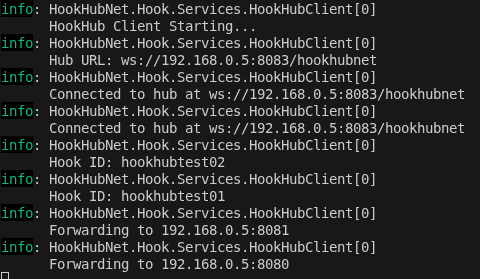
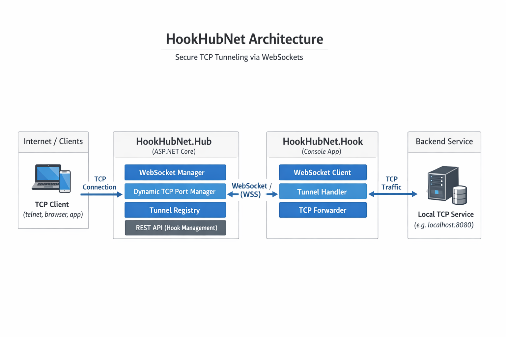

Interface Preview
Early-stage UI — evolving fast



HookHubNet is a tunneling system that enables secure forwarding of TCP traffic through WebSocket connections. It consists of a central hub that manages connections from multiple hooks, each forwarding traffic to backend services.
Secure forwarding of TCP traffic through WebSocket connections.
Automatic assignment of unique TCP ports for each hook.
Efficient handling of multiple simultaneous tunnels.
Endpoints to query and manage connected hooks.
The system operates by having hooks connect to a central hub via WebSockets. Each hook is assigned a unique TCP port on the hub. Incoming TCP connections to these ports are tunneled through the WebSocket to the hook, which then forwards the traffic to the configured backend service. This allows exposing local services securely without direct network exposure.
HookHubNet follows a client-server architecture with a hub-and-spoke model:

Diagram showing the hub-and-spoke architecture with WebSocket connections between hooks and hub, and TCP tunnels to backends.
No authentication or authorization is currently implemented. Connections are accepted based on hook ID query parameter.
HookHubNet.sln: Solution file containing all projects.HookHubNet.Common/: Shared library with DTOs, models, and protocol handling.HookHubNet.Hub/: ASP.NET Core web application for the central hub.HookHubNet.Hook/: Console application for hook clients.HookHubNet.Proxy/: Legacy project (deprecated).curl http://localhost:5000/hook/getallcurl http://localhost:5000/hook/get/webhookcurl http://localhost:5000/hook/remove/webhookHooks connect via WebSocket: ws://localhost:5000/hookhubnet?id=webhook
Once connected, TCP traffic to the assigned port is forwarded to the hook's backend.
No automated tests are currently implemented. Manual testing involves:
Example test scenario: Use telnet or nc to connect to the hub's assigned port and observe data forwarding.
Deploy the hub as a standard ASP.NET Core application using IIS, Nginx, or Docker. Hooks can run as console applications or services. Ensure network connectivity between hub and hooks. Use reverse proxies for SSL termination.
This is a development version; production deployment requires security hardening.
Early-stage UI — evolving fast

git clone https://github.com/mrodriguex/hookhubnet.git
cd hookhubnetConfiguration is managed via appsettings.json files:
HubUrl and Hooks array.Example appsettings.json for HookHubNet.Hook:
{
"HubUrl": "ws://localhost:5201/hookhubnet",
"Hooks": [
{
"HookId": "webhook",
"TargetHost": "localhost",
"TargetPort": 8080
}
]
}Environment variables can override settings.
dotnet build HookHubNet.slndotnet run --project HookHubNet.Hubdotnet run --project HookHubNet.HookThe hub runs on the configured port (default 5000), and hooks connect via WebSocket.
Full documentation, architecture details, and usage examples are available in the README.
Read the Docs